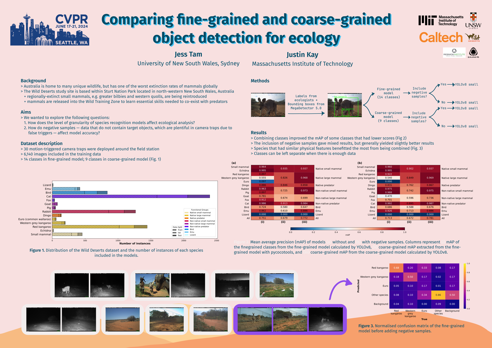

Hello world! I'm a PhD student at UNSW Sydney. My research focuses on applying computer vision tools to process wildlife camera trap images in Australia.
I'm supervised by Richard Kingsford, Will Cornwell, and Arcot Sowmya from UNSW, Shinichi Nakagawa from the University of Alberta, and Hideo Saito from Keio University.
Prior to this, I completed my BSc in Biology and BSc (Hons) at UNSW Sydney, under the supervision of Shinichi Nakagawa and Will Cornwell.
I wrote my thesis about the biases in the scientific literature of mammalian reserch, which was later published (see below).
My research interests include conservation technology, real-life applications of computer vision, and bibliometric analyses.
Selected works
Tam, J., Cornwell, W. (2025, Oct). Simple edge-guided wildlife classification with classical detectors [Poster]. Sustainability with Earth Observation & AI (SEA) Workshop @ICCV, Honolulu, Hawaii.
Pottier, P., Lagisz, M., Burke, S., Drobniak, S., Downing, P., Macartney, E., Martinig, A., Mizuno, A., Morrison, K., Pollo, P., Ricolfi, L., Tam, J., Williams, C., Yang, Y. & Nakagawa, S. (2024). Title, abstract, and keywords: a practical guide to maximise the visibility and impact of academic papers. Proceedings of the Royal Society B: Biological Sciences, 291, 20241222. https://doi.org/10.1098/rspb.2024.1222.
Tam, J., Kay, J. (2024, June). Comparing fine-grained and coarse-grained object detection for ecology [Poster]. 11th Fine-Grained Visual Categorization (FGVC) Workshop @CVPR, Seattle, USA. https://doi.org/10.48550/arXiv.2407.00018.

Nakagawa, S., Lagisz, M., Francis, R., Tam, J., Li, X., Elphinstone, A., Jordan, N., O'Brien, J., Pitcher, B., Van Sluys, M., Sowmya, A. & Kingsford, R. (2023). Rapid literature mapping on the recent use of machine learning for wildlife imagery. Peer Community Journal, 3, e35. https://doi.org/10.24072/pcjournal.261.
Tam, J., Lagisz, M., Cornwell, W. K. & Nakagawa, S. (2022). Quantifying research interests in 7,521 mammalian species with h-index: a case study. Gigascience, 11, giac074. https://doi.org/10.1093/gigascience/giac074.